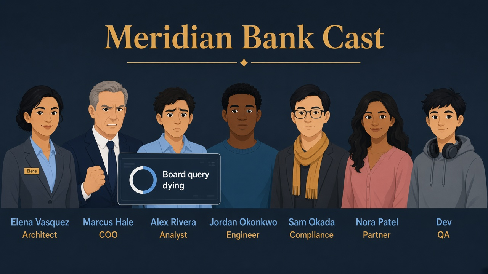
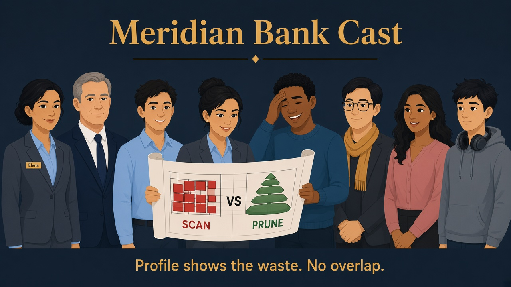
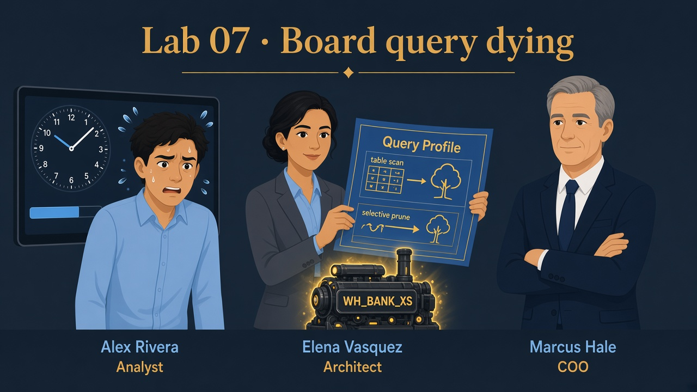

Lab 07 · Friday AM · You are Elena · Alex’s board query
Marcus is angry — the board query crawls
This lab is live triage, not theory.
You load ~400k event rows, break Alex’s SQL on purpose, fix it, read Query Profile + history metrics,
and only then temporarily bump the warehouse — then put credits back.
Business problem
Board meeting in two hours. Alex’s country rollup on clients + events crawls on WH_BANK_XS.
Marcus: “Buy a bigger warehouse?” Elena: “Not until we prove what’s wasting bytes.”
Solution you will run (in order)
Load SILVER_CURATED.BIG_EVENTS → fix SQL (projection → sargable filter → filter-before-join)
→ read partition/bytes metrics → last: dedicated WH_BANK_BOARD_S (auto wake/sleep — not Slack ALTER)
→ drop Lab-07-only fat table; keepBIG_EVENTS + board WH for later labs.

Before
Board query dying — “buy a bigger warehouse?”

After
Profile + metrics — fix SQL/scan before upsizing.
See it — what Query Profile is for
After each before/after pair: Query History → that query → Query Profile. Compare bytes scanned and partitions.
Profile
Operator graph
TableScan, Join, Aggregate — where time and bytes go.
Up = bigger engine. Out = more clusters (concurrency). Prod = route heavy work to its own WH.
WH_BANK_BOARD_S auto-resumes Elena is not on-call for ALTER SIZE

Picture · Open the blueprint
Elena uses Query Profile while Alex’s board query crawls — diagnose before upsizing.
Elena’s triage order (interview script — live in this lab)
1 · Query fixProjectionStop SELECT *
2Sargable filterDon’t wrap EVENT_DATE
3Filter before joinLess rows into the join
4MeasureProfile + QUERY_HISTORY
5 · LastBoard warehouseWH_BANK_BOARD_S · auto on/off
Keep for Lab 08:SILVER_CURATED.BIG_EVENTS (unclustered history — Lab 08 adds CLUSTER BY).
Keep for Lab 13:WH_BANK_BOARD_S (FinOps / chargeback story).
Drop before you leave:PERF_WIDE only.
Do users ping Elena every time to resize? No.
Snowflake does not auto-change a warehouse’s size (XS→S) when a heavy query arrives.
Manual ALTER WAREHOUSE … SET WAREHOUSE_SIZE is a lab demo / emergency — not a helpdesk workflow.
Production pattern
Dedicated heavier WH
Board BI / FR_ANALYST uses WH_BANK_BOARD_S. Daily work stays on WH_BANK_XS.
Tasks set WAREHOUSE = … for scheduled jobs. Multi-cluster = concurrency. Query Acceleration = burst (edition).
Alex never messages “please bump to SMALL”
Friday AM · war room
Elena: “I’ll fix the SQL first. If the board rollup still needs more horsepower, Alex’s Looker connection points at
WH_BANK_BOARD_S — it wakes when he runs, sleeps when he’s done. I am not resizing WH_BANK_XS by Slack.”
0
Session + fair A/B (no result-cache cheat)
What this does
Lab context, then turn off result cache so “after” queries really re-execute — otherwise Snowsight looks magically fast.
What you should see
Session set; warehouse XS.
SQL · context + cache off
USE ROLE ROLE_BANK_LAB_ADMIN;
USE WAREHOUSE WH_BANK_XS;
USE DATABASE MERIDIAN_BANK;
USE SCHEMA SILVER_CURATED;
ALTER SESSION SET USE_CACHED_RESULT = FALSE;
✓ Cache off for this session — fair before/after timings
1
Load volume — BIG_EVENTS (kept for Lab 08)
What this does
~400k synthetic events across ~365 days — enough micro-partitions that Profile’s “partitions scanned” is meaningful.
Lab 08 will cluster this same table; do not drop it at the end.
What you should see
ROW_CNT near 400000; MIN_DT/MAX_DT spanning roughly a year.
SQL · BIG_EVENTS
CREATE OR REPLACE TABLE BIG_EVENTS AS
SELECT
SEQ4() AS EVENT_ID,
UNIFORM(1, 5, RANDOM()) AS CLIENT_ID,
DATEADD('day', -UNIFORM(0, 364, RANDOM()), CURRENT_DATE()) AS EVENT_DATE,
UNIFORM(1, 100, RANDOM())::NUMBER(12, 2) AS AMOUNT,
UNIFORM(1, 4, RANDOM()) AS STATUS_CODE
FROM TABLE(GENERATOR(ROWCOUNT => 400000));
SELECT COUNT(*) AS ROW_CNT, MIN(EVENT_DATE) AS MIN_DT, MAX(EVENT_DATE) AS MAX_DT
FROM BIG_EVENTS;
Copies events and pads wide text columns so SELECT * really burns bytes vs a slim projection.
What you should see
Table PERF_WIDE exists. You will DROP it in the final step.
SQL · PERF_WIDE
CREATE OR REPLACE TABLE PERF_WIDE AS
SELECT
EVENT_ID, CLIENT_ID, EVENT_DATE, AMOUNT, STATUS_CODE,
REPEAT('PAD', 80) AS NOTE_A,
REPEAT('PAD', 80) AS NOTE_B,
REPEAT('PAD', 80) AS NOTE_C
FROM BIG_EVENTS;
3
Scenario 1 — Query fix: stop SELECT *
Problem
Alex pulls every padded column for a 7-day window — TableScan hauls junk Marcus never charts.
Solution
Project only the columns the board needs. Open Profile on both — bytes scanned should drop.
SQL · BEFORE · SELECT *
SELECT * FROM PERF_WIDE
WHERE EVENT_DATE >= DATEADD('day', -7, CURRENT_DATE());
SQL · AFTER · slim projection
SELECT EVENT_ID, CLIENT_ID, EVENT_DATE, AMOUNT
FROM PERF_WIDE
WHERE EVENT_DATE >= DATEADD('day', -7, CURRENT_DATE());
✓ Profile: AFTER TableScan bytes < BEFORE — say that out loud to Marcus
4
Scenario 2 — Filter that fights pruning
Problem
YEAR(EVENT_DATE) / MONTH(EVENT_DATE) wraps the column — Snowflake can’t use min/max metadata as cleanly → more partitions opened.
Solution
Sargable range on the bare column. Same calendar month, better prune story (Lab 08 clustering makes this even stronger).
SQL · BEFORE · wrapped filter
SELECT COUNT(*), SUM(AMOUNT)
FROM BIG_EVENTS
WHERE YEAR(EVENT_DATE) = YEAR(CURRENT_DATE())
AND MONTH(EVENT_DATE) = MONTH(CURRENT_DATE());
SQL · AFTER · sargable range
SELECT COUNT(*), SUM(AMOUNT)
FROM BIG_EVENTS
WHERE EVENT_DATE >= DATE_TRUNC('month', CURRENT_DATE())
AND EVENT_DATE < DATEADD('month', 1, DATE_TRUNC('month', CURRENT_DATE()));
✓ Compare bytes in history + partitions via GET_QUERY_OPERATOR_STATS (step 6)
5
Scenario 3 — Alex’s board join: filter before join
Problem
Join all ~400k events to clients, then aggregate — the join builds on a year of rows for a board chart that only needs recent activity.
Solution
CTE filters last 7 days first, then joins. Profile: smaller join build/probe.
SQL · BEFORE · join everything
SELECT c.COUNTRY, COUNT(*) AS TXNS, SUM(e.AMOUNT) AS VOLUME
FROM BRONZE_LANDING.CLIENTS c
JOIN BIG_EVENTS e ON e.CLIENT_ID = c.CLIENT_ID
GROUP BY c.COUNTRY
ORDER BY VOLUME DESC;
SQL · AFTER · filter then join
WITH recent AS (
SELECT CLIENT_ID, AMOUNT
FROM BIG_EVENTS
WHERE EVENT_DATE >= DATEADD('day', -7, CURRENT_DATE())
)
SELECT c.COUNTRY, COUNT(*) AS TXNS, SUM(r.AMOUNT) AS VOLUME
FROM BRONZE_LANDING.CLIENTS c
JOIN recent r ON r.CLIENT_ID = c.CLIENT_ID
GROUP BY c.COUNTRY
ORDER BY VOLUME DESC;
✓ AFTER finishes with far fewer rows touching the join — this is the main board fix
6
Scenario 4 — Prove it with metrics (not vibes)
What this does
QUERY_HISTORY_BY_SESSION gives elapsed time and BYTES_SCANNED (it does not expose partition columns).
For partitions, re-run a BEFORE or AFTER query, then call GET_QUERY_OPERATOR_STATS(LAST_QUERY_ID()) — same prune numbers as Query Profile.
What you should see
History: AFTER queries usually lower BYTES_SCANNED. Operator stats: TableScan rows with PARTITIONS_SCANNED / PARTITIONS_TOTAL.
SQL · session bytes / time
SELECT
QUERY_ID,
LEFT(QUERY_TEXT, 80) AS QUERY_SNIP,
TOTAL_ELAPSED_TIME,
BYTES_SCANNED,
ROWS_PRODUCED
FROM TABLE(INFORMATION_SCHEMA.QUERY_HISTORY_BY_SESSION())
WHERE QUERY_TEXT ILIKE '%BIG_EVENTS%'
OR QUERY_TEXT ILIKE '%PERF_WIDE%'
ORDER BY START_TIME DESC
LIMIT 12;
SQL · partitions for last query
-- Re-run one BEFORE or AFTER query from steps 3–5, then immediately:
SELECT
OPERATOR_TYPE,
OPERATOR_STATISTICS:pruning:partitions_scanned::NUMBER AS PARTITIONS_SCANNED,
OPERATOR_STATISTICS:pruning:partitions_total::NUMBER AS PARTITIONS_TOTAL,
ROUND(
100 * OPERATOR_STATISTICS:pruning:partitions_scanned::NUMBER
/ NULLIF(OPERATOR_STATISTICS:pruning:partitions_total::NUMBER, 0),
1
) AS PCT_PARTITIONS_READ
FROM TABLE(GET_QUERY_OPERATOR_STATS(LAST_QUERY_ID()))
WHERE OPERATOR_STATISTICS:pruning:partitions_total IS NOT NULL
ORDER BY PARTITIONS_SCANNED DESC NULLS LAST;
UI twin
Query History → that query → Query Profile → TableScan.
Say: “bytes scanned” and “partitions scanned” — not “it felt slow.”
After SQL is fixed, the board rollup may still want a bigger engine.
You will not sit on Slack resizing WH_BANK_XS. Create a SMALL warehouse with
AUTO_RESUME / AUTO_SUSPEND — Alex’s tool (or role default) uses it; Snowflake starts/stops it.
What you should see
WH_BANK_BOARD_S appears (may show Started while you query, then Suspended after ~60s idle). Daily work returns to WH_BANK_XS.
SQL · create board WH (ACCOUNTADMIN)
USE ROLE ACCOUNTADMIN;
CREATE WAREHOUSE IF NOT EXISTS WH_BANK_BOARD_S
WAREHOUSE_SIZE = 'SMALL'
AUTO_SUSPEND = 60
AUTO_RESUME = TRUE
INITIALLY_SUSPENDED = TRUE
COMMENT = 'Meridian board / heavy analyst jobs — auto wake+sleep';
GRANT USAGE ON WAREHOUSE WH_BANK_BOARD_S TO ROLE ROLE_BANK_LAB_ADMIN;
GRANT OPERATE ON WAREHOUSE WH_BANK_BOARD_S TO ROLE ROLE_BANK_LAB_ADMIN;
-- After Lab 01 exists:
GRANT USAGE ON WAREHOUSE WH_BANK_BOARD_S TO ROLE FR_ANALYST;
SQL · Alex runs board query on BOARD_S
USE ROLE ROLE_BANK_LAB_ADMIN;
USE WAREHOUSE WH_BANK_BOARD_S;
USE DATABASE MERIDIAN_BANK;
USE SCHEMA SILVER_CURATED;
SELECT c.COUNTRY, COUNT(*) AS TXNS, SUM(e.AMOUNT) AS VOLUME
FROM BRONZE_LANDING.CLIENTS c
JOIN BIG_EVENTS e ON e.CLIENT_ID = c.CLIENT_ID
WHERE e.EVENT_DATE >= DATEADD('day', -30, CURRENT_DATE())
GROUP BY c.COUNTRY
ORDER BY VOLUME DESC;
SQL · back to daily XS + prove both exist
USE WAREHOUSE WH_BANK_XS;
SHOW WAREHOUSES LIKE 'WH_BANK%';
Automation = routing, not Elena’s calendar
Point the board dashboard / FR_ANALYST default warehouse at WH_BANK_BOARD_S.
Credits burn only while it runs; after idle it suspends itself. Keep WH_BANK_XS for light ad hoc.
Not the prod patternALTER WAREHOUSE WH_BANK_XS SET WAREHOUSE_SIZE = 'SMALL' then flip back — useful once in a war room,
terrible as “ping the architect before every board refresh.”
✓ Two warehouses — XS daily, BOARD_S heavy — BOARD_S kept for Lab 13
8
Cleanup — drop Lab 07-only fat table
What this does
Drops PERF_WIDE so later labs aren’t carrying padded junk.
Does not drop BIG_EVENTS — Lab 08 clusters that table next.
SQL · cleanup
DROP TABLE IF EXISTS PERF_WIDE;
SELECT 'Lab 07 OK — BIG_EVENTS + WH_BANK_BOARD_S kept; PERF_WIDE dropped' AS status;
✓ Status row · matches sql/07_query_profile.sql
Interview trap
Scaling the warehouse does not fix a full-year join or SELECT *.
Multi-cluster (scale out) is for many concurrent users — not “make one query bigger.”
Auto size-up of the same warehouse is not how Snowflake works — route heavy jobs to a sized WH with auto-suspend.
Lab 08: clustering improves pruning on EVENT_DATE for the table you just kept.
Interviewer presses further — say these out loud
Basics got you into the room. Cover each answer before you open it.
If you blank here, an Architect + dbt interviewer will know.
Q1. Profile shows high bytes scanned — why is ALTER WAREHOUSE … SIZE the wrong first move?
Say: Size multiplies the same bad plan. Fix projection, sargable filters, filter-before-join; prove bytes/partitions; then route heavy board jobs to WH_BANK_BOARD_S. On-call ALTER SIZE is a war-room tactic, not an operating model.
Q2. Users will run the board query again — do they ping Elena to resize every time?
Say: No. Snowflake does not auto-change one warehouse’s size per query. Give the board workload WH_BANK_BOARD_S with AUTO_RESUME/AUTO_SUSPEND; point Alex’s BI / FR_ANALYST at it. It wakes on query and sleeps idle. Daily work stays on WH_BANK_XS.
Q3. Auto-resume on WH_BANK_BOARD_S — cost/SLA tradeoff?
Say: First query pays resume latency; idle doesn’t burn. Failure mode: BOARD_S with no auto-suspend, or every ad hoc query pointed at BOARD_S so XS discipline dies. Route by workload class.
Q4. Multi-cluster vs bigger warehouse — when is each wrong?
Say: Multi-cluster = concurrency (many Alexes queuing). Larger size = one fat query needing more CPU/memory. Scaling out won’t fix SELECT * over a year of BIG_EVENTS; scaling up won’t fix 50 concurrent dashboards on XS.
Q5. Spill to remote storage in Profile — what do you say next?
Say: Memory pressure from wide rows or bad joins — tighten columns, pre-aggregate, maybe bigger WH for that job class. Spill means SQL/WH pairing is wrong; clustering (Lab 08) helps pruning, not magic anti-spill.
Elena’s wrap-up (say this out loud)
“I loaded SILVER_CURATED.BIG_EVENTS so partitions exist, then triaged Alex’s board path:
slim projection, sargable date filters, filter-before-join, proved bytes and partitions from history and Query Profile.
For ongoing compute, I didn’t babysit ALTER SIZE — I gave the board workload WH_BANK_BOARD_S with AUTO_RESUME/AUTO_SUSPEND
so it wakes when Alex runs and sleeps when idle; daily work stays on WH_BANK_XS.
PERF_WIDE is gone; BIG_EVENTS stays for clustering next.
Outcome: Marcus gets SQL-first diagnosis and an automated size story — not an on-call resize rota.”